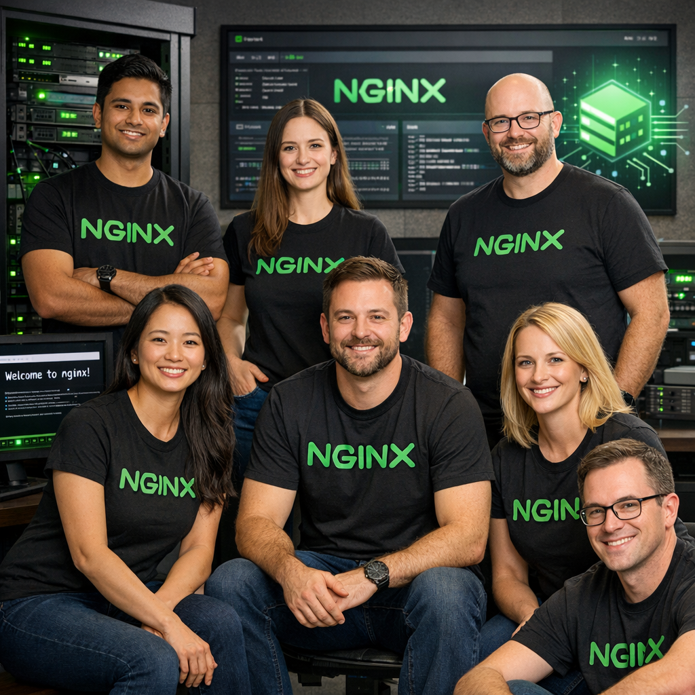

Empowering the next generation of engineers with industry-grade DevOps and Cloud practices.
TechBridge India was founded with a single mission: to demystify complex web servers, cloud deployments, and automated delivery pipelines for computer science students and developers.
We believe that learning shouldn't stop at academic textbooks. By introducing production-level technologies like AWS, Docker, Nginx, and automated GitHub Actions CI/CD workflows, we prepare students for the modern tech workspace.
Through hands-on laboratory exercises, real-world deployment cases, and mentorship, our students build confidence in launching scalable, containerized applications to the cloud.
We focus on real production environments and terminal commands, skipping the passive slides and video lectures.
Students learn industry-standard tools like Docker, Nginx, and GitHub Actions, ensuring immediate career relevance.
We emphasize clean automation pipelines, code checks, and lint standards for high-reliability software delivery.

Our team of experienced software developers and system architects are dedicated to bringing cutting-edge industry training to students across India.